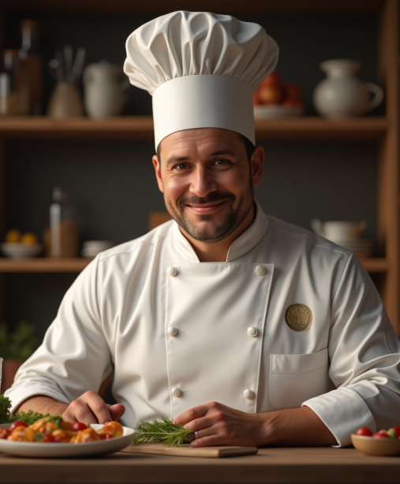
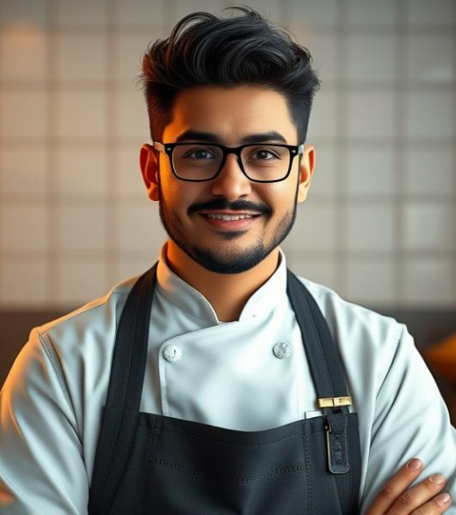

Our staff are extremely well-trained individuals who have mastered their cooking.
In case you don't believe us, here are the education backgrounds of our experienced team.
Mr Pang
Mr Pang is the founder of Thirty Packs of Instant Noodles and has been with the company since its founding in 1940.
Even though he never attended culinary school, he has over 85 years of kitchen experience. His passion for instant noodles started in childhood, after eating thirty packs — inspiring the name of the restaurant.
Mr Jun
Mr Jun is our supportive, kind, award-winning executive chef. He graduated from both Harvard University and Le Cordon Bleu.
With 50+ years of experience, he’s collaborated with top chefs like Uncle Kyle.
Mr Jie
Head sous chef Mr Jie trained at Le Cordon Bleu and brings 30+ years of culinary expertise. His love for instant noodles began in childhood.
Mr Teoh
Mr Teoh is the head of marketing. A graduate of M.I.T., he helped grow our customer base to billions worldwide.
Mr Laquarius Tyrone Francis
Mr Laquarius is our head financial advisor. A graduate of M.I.T. and Harvard, he kept us thriving through crises like COVID-19, 2008, and the Great Depression.
Mr Cent
Prodigy chef and head trainee, Mr Cent graduated from America’s Elite Culinary Institute and has trained over 6,000 chefs in our franchises.

Mr Tan
Mr Tan is our head chef and a Le Cordon Bleu graduate. With 20+ years of experience, he helps chefs develop advanced culinary skills.
Joodle
Joodle is our beloved mascot, cheering up children and spreading joy since 1940. Created from a dream by Mr Pang, Joodle embodies our spirit.
Mr Derren
Billionaire philanthropist Mr Derren promotes the brand worldwide and contributes to global charity projects representing the franchise.

Mr Talia
Assistant head trainee chef and Culinary Institute of America graduate. Mr Talia has helped train over 4,000 chefs worldwide.
Mr Habib
Head waiter and graduate of Butler Academy Institute. Mr Habib has trained over 20,000 waiters worldwide since 1950.
Mr Stim
Head trainee waiter and 30-year veteran. Mr Stim trained over 40,000 staff and also graduated from Butler Academy Institute.
Mrs Viddea
Head janitor with 7+ years of experience. Mrs Viddea ensures world-class cleanliness. Graduate of Han Chiang University College of Communication.
Mrs Andrea
Head dishwasher. A graduate of Han Chiang University, Mrs Andrea trains staff to handle high-volume dishwashing with efficiency and care.
Mr Richard
Head cashier with 40 years of experience. Graduate of Stanford University, he mentors all our cashiers across the world.
Mr Stalled
Assistant head cashier and Cambridge University graduate. With 15 years of experience, he’s trained thousands of franchise cashiers.
Mr Ho
Head manager. A Harvard graduate with 70+ years of service, Mr Ho oversees company operations and strategic growth.
Mrs Hoe
Assistant head manager. M.I.T. alumna with over 10 years of experience, helping streamline efficiency company-wide.
JJ.co
JJ.co is a billion-dollar farming company and long-term supplier for our franchise, delivering fresh and organic produce for over 80 years.